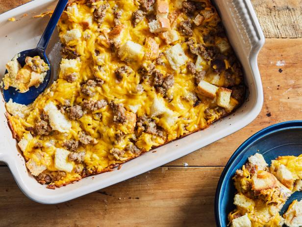

Sausage Casserole

Easy Breakfast, Lunch, and Dinner!!
Ingredients
- 1 pound sage flavored breakfast sausage
- 3 cups shredded potatoes, drained and pressed
- ¼ cup butter, melted
- 12 ounces mild Cheddar cheese, shredded
- ½ cup onion, shredded
- 1 (16 ounce) container small curd cottage cheese
- 6 jumbo eggs
Directions
- Preheat oven to 375 degrees F (190 degrees C). Lightly grease a 9x13 inch square baking dish.
- Place sausage in a large, deep skillet. Cook over medium-high heat until evenly brown. Drain, crumble, and set aside.
- In the prepared baking dish, stir together the shredded potatoes and butter. Line the bottom and sides of the baking dish with the mixture. In a bowl, mix the sausage, Cheddar cheese, onion, cottage cheese, and eggs. Pour over the potato mixture.
- Bake 1 hour in the preheated oven, or until a toothpick inserted into center of the casserole comes out clean. Let cool for 5 minutes before serving.